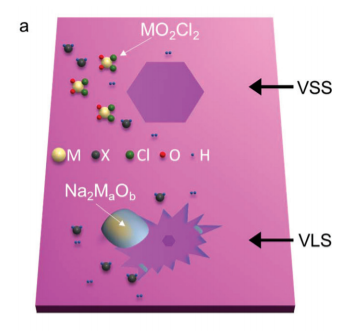

- Introduction
- Transition Metal Dichalcogenides (TMDCs)
- Transition Metal Dichalcogenides (TMDCs)
- Experiment
- Results
- Discussion
- Q&A
Kuan-Chia Chiu (D06222003)
Physics Department @ NTU
In a typical CVD synthesis, a transition metal containing precursor is placed in a tube furnace with a chalcogen precursor and a target substrate.

Depictions of VSS and VLS growth modes for NaCl assisted TMDC synthesis. In the VSS mode, adsorbed vapour forms the crystals while in the VLS mode, a liquid precursor forms the crystal via a chemical reaction. M and X denote the metal and the chalcogen precursors, respectively.